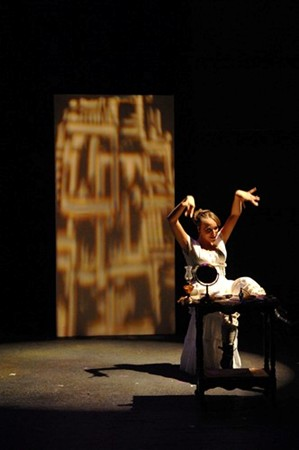

<!DOCTYPE html PUBLIC "-//W3C//DTD XHTML 1.0 Transitional//EN" "http://www.w3.org/TR/xhtml1/DTD/xhtml1-transitional.dtd">
<html>
<head>


<html><span style="font-size:16pt;font-family:Trebuchet MS"><div id="bodyDiv" style="width:900px; background-color:#FFE4E1; text-align:center">


	<!--- begin page body -->
	<div id="bodyDiv" style="width:900px; background-color:#DAA520;">
		<div class="pageTextStyle">
			<br/><blockquote>


			<!-- Begin page content block -->
			<center><br><br>
			<span style="font-family:Times New Roman;font-size:25px;font-weight:bold;color:#000000;">Kevin Johnson, Artistic Director</span>

			<p><span style="font-family:Times New Roman;font-size:20px;font-weight:bold;">PRESENTS</span>

			<br/><br/><span style="font-family: "Abadi MT Condensed Extra Bold"'>Stephen
Sondheim’s PULITZER PRIZE and Multi-Tony Award winning musical<br></p>

<center>

<br><br><br><br><B><Span style='font-size 30.0pt;font-family:"Trebuchet MS"'>ENTIRELY SOLD OUT</b><BR><BR>

<p class=MsoNormal align=center style='margin-left:5.0in;text-align:center;
text-indent:-5.0in'><i style='mso-bidi-font-style:normal'><span
style='font-size:18.0pt;font-family:"Trebuchet MS"'>Music and Lyrics by Stephen
Sondheim<o:p></o:p></span></i></p>

<p class=MsoNormal align=center style='margin-left:5.0in;text-align:center;
text-indent:-5.0in'><i style='mso-bidi-font-style:normal'><span
style='font-size:18.0pt;font-family:"Trebuchet MS"'>Book by James <span
class=SpellE>Lapine</span><o:p></o:p></span></i></p>

<p class=MsoNormal align=center style='margin-left:5.0in;text-align:center;
text-indent:-5.0in'><i style='mso-bidi-font-style:normal'><span
style='font-size:18.0pt;font-family:"Trebuchet MS"'>Directed by Kevin Johnson<o:p></o:p></span></i></p>

<p class=MsoNormal align=center style='margin-left:5.0in;text-align:center;
text-indent:-5.0in'><i style='mso-bidi-font-style:normal'><span
style='font-size:18.0pt;font-family:"Trebuchet MS"'>Associate Direction by Rob Russo<o:p></o:p></span></i></p>

<p class=MsoNormal align=center style='margin-left:5.0in;text-align:center;
text-indent:-5.0in'><i style='mso-bidi-font-style:normal'><span
style='font-size:18.0pt;font-family:"Trebuchet MS"'>Music Direction by David
Craig<o:p></o:p></span></i></p>

<p class=MsoNormal align=center style='margin-left:5.0in;text-align:center;
text-indent:-5.0in'><i style='mso-bidi-font-style:normal'><span
style='font-size:18.0pt;font-family:"Trebuchet MS"'>Orchestra Conducted by Tim Warren<o:p></o:p></span></i></p>

<p class=MsoNormal align=center style='margin-left:5.0in;text-align:center;
text-indent:-5.0in'><i style='mso-bidi-font-style:normal'><span
style='font-size:18.0pt;font-family:"Trebuchet MS"'>Production Stage Management by Christopher Anaya-Gorman<o:p></o:p></span></i></p>


<p class=MsoNormal align=center style='margin-left:5.0in;text-align:center;
text-indent:-5.0in'><i style='mso-bidi-font-style:normal'><span
style='font-size:18.0pt;font-family:"Trebuchet MS"'>Costume Design by Robin
Sweet<o:p></o:p></span></i></p><p class=MsoNormal align=center style='margin-left:5.0in;text-align:center;
text-indent:-5.0in'><i style='mso-bidi-font-style:normal'><span
style='font-size:18.0pt;font-family:"Trebuchet MS"'>Digital Animation by Porter McDonald
<o:p></o:p></span></i></p>


<p class=MsoNormal align=center style='margin-left:5.0in;text-align:center;
text-indent:-5.0in'><i style='mso-bidi-font-style:normal'><span
style='font-size:18.0pt;font-family:"Trebuchet MS"'>Scenic and Lighting Design by Scot Gianelli and Dan O'Brien<o:p></o:p></span></i></p>

<p class=MsoNormal align=center style='margin-left:5.0in;text-align:center;
text-indent:-5.0in'><i style='mso-bidi-font-style:normal'><span
style='font-size:18.0pt;font-family:"Trebuchet MS"'>Sound Design by 
Jon Marbry<o:p></o:p></span></i></p>

<p class=MsoNormal align=center style='margin-left:5.0in;text-align:center;
text-indent:-5.0in'><i style='mso-bidi-font-style:normal'><span
style='font-size:18.0pt;font-family:"Trebuchet MS"'>Choreography by 
Rob Russo<o:p></o:p></span></i></p><br><br><br><span style="font-family:Lucida Sands;font-size:15px;font-weight:bold;"><p align=left>Tim Fuller photo</span>


<p class=MsoNormal style='text-align:justify'><span style='font-family:"Trebuchet MS"'>  
Featuring Kit Runge as George and Kriste' Belt as Dot, with Jacob Brown, Liz Cracchiolo, Robert Fuller, AuBrie Ann Goettsche, Charity LaPonsie, Brian Levario, Todd Luethjohann, Olivia Marhefka, Chris Pankratz, Corina Riggs, Ina Shivack, Tom Spencer, Greg Sweet, Daniel Tenney and Martie van der Voort<br/></i>

<p class=MsoNormal style='text-align:justify'><span style='font-family:"Trebuchet MS"'>Stephen Sondheim
and James Lapine were inspired by George Seurat’s “A
Sunday Afternoon on the Island of La Grand Jatte.” 
In discussing the painting, Lapine noted that no one
was looking at one another and that there was one major figure missing from the
canvas: the artist himself. These observations provided the springboard for the
creation of the musical, <i style='mso-bidi-font-style:normal'>Sunday in the
Park with George.</i><br><p class=MsoNormal style='text-align:justify'><span style='font-family:"Trebuchet MS"'>More
than a century ago, George Seurat challenged his audience and fellow artists to
experience the art of painting from a new perspective ~ and with different
results. <o:p></o:p></span>

<p class=MsoNormal style='text-align:justify'><span style='font-family:"Trebuchet MS"'>Currently playing in New York City at Studio 54 to sold-out houses (and three extensions!), this timeless show comes to Tucson for nine performances only, <b>all sold out as of June 25.</b><br><br>Preview: June 19, 7:30pm (special discount prices)<br>
June 20 & 21, 26 (show added), 27, 28, 7:30pm<br>
June 22, 29, 2pm matinee, June 29, 6pm<br><br>
 <BR><BR><BR><br><BR><BR><BR><BR><BR><BR><BR>

<br><BR><BR><BR><br><br><br><br><br><br><p class=MsoNormal style='text-align:left'>Here's a review from <i>The Arizona Daily Star</i> by Kathy Allen <a href="http://www.azstarnet.com/accent/245285.php">(Arizona Daily Star)</a>.<br><br><i>The Tucson Citizen's</i> Chuck Graham weighs in. <a href="http://www.tucsoncitizen.com/ss/theater/89353.php">(Tucson Citizen)</a><br><br> Read the <i>Downtown Tucsonan Magazine's</i> short piece here. <a href="http://www.nxtbook.com/nxtbooks/downtowntucsonan/200806/index.php?startid=18"> Downtown Tucsonan Magazine</a> (Click on the bottom right hand corner to turn the page).<br><br>The <i>Tucson Weekly</i> preview. <a href="http://www.tucsonweekly.com/gbase/Arts/Content?oid=oid:112161"> Tucson Weekly</a><br><br></a><br><br>   


<p class=MsoNormal style='text-align:justify'><span style='font-family:"Trebuchet MS"'>Playing
June 19-29, 2008, at PCC West Campus Center for the Arts Black Box Theater.<br><br></span><p class=MsoNormal style='text-align:left'><span style='font-family:"Trebuchet MS"'><i>Sponsored in part by the Tucson Museum of Art</i><br><br>

